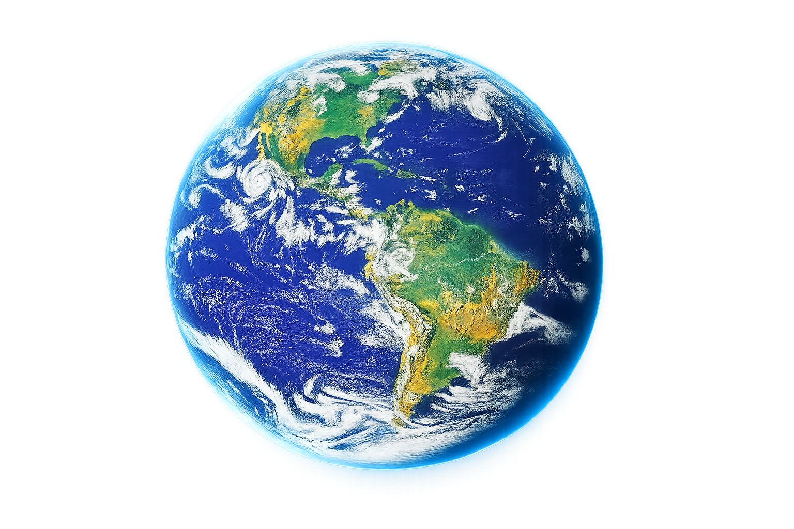

01
A Terra não é uma esfera perfeita. Sua rotação faz com que ela seja ligeiramente achatada nos polos.
O terceiro planeta a partir do Sol e o único mundo conhecido que abriga vida.
← Voltar ao Sistema Solar
A Terra é um planeta rochoso com uma atmosfera rica em nitrogênio e oxigênio e possui grandes quantidades de água em sua superfície.
A Terra é nossa referência. Veja quanto tempo dura um dia em cada planeta do Sistema Solar.
Júpiter consegue completar aproximadamente 2,4 dias no mesmo período.
Cerca de 71% da superfície da Terra é coberta por água. A presença de água líquida, uma atmosfera adequada e temperaturas favoráveis tornam nosso planeta especialmente importante para a vida.
A Terra também possui um campo magnético que ajuda a proteger sua superfície contra parte da radiação e das partículas provenientes do Sol.
Grande parte da superfície terrestre é coberta por oceanos.
A Terra possui um satélite natural: a Lua.
É o único planeta conhecido onde existe vida.
A Terra não é uma esfera perfeita. Sua rotação faz com que ela seja ligeiramente achatada nos polos.
A atmosfera terrestre é composta principalmente por nitrogênio e oxigênio.
A Terra completa uma volta ao redor do Sol em aproximadamente 365 dias.